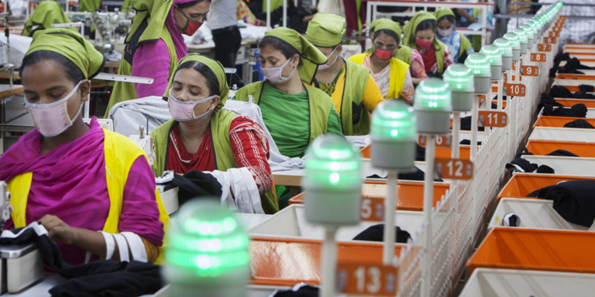

The industry that has been making crucial contribution to rebuilding the country and its economy is none other than the readymade garment (RMG) industry which is now the single biggest export earner for Bangladesh. The sector accounts for 83% of total export earnings of the country.
The Bangladesh economy is highly dependent on the RMG sector for foreign export earnings. A major challenge that lies ahead is hunt and creation of export-oriented sectors, in order to generate quality jobs. It is high time the country reduced its dependence on the RMG sector and opted for diversification. This sector also faces a lot of challenges. These are given below:
Picture of RMG
